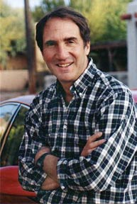

Welcome
to the
SONGWRITING PAGE
of www.BlueCanyonProductions.com
|
(www.BlueCanyonProductions.com)
"Santa Fe's —and therefore the world's—strangest web site. Fascinating sound clips and soul-nourishing content." - Bill Hutchison, staff writer, Santa Fe Reporter (See our Home Page) |
|

Jim Terr |
Santa
Fe songwriter |
|
Santa Fe singer/songwriter Jim Terr will host a songwriting workshop Saturday, October 28 for practicing songwriters as well as those interested in entering this field. The daytime workshop will be followed by a showcase performance by participants for guests and the public that evening. The workshop will consist of a brief discussion of songwriting technique and business, and constructive critiques of participants' songs-in-progress, and will be held from 10 AM until 4 PM at the Mustang Room of the Cowboy Hall of Fame Restaurant in Santa Fe. The showcase will be at 8 PM in the North Room of Cloud Cliff Bakery, 1805 Second Street in Santa Fe, with a $5 cover charge. Terr's songs have been broadcast on most major radio networks and programs, and in over 20 foreign countries, according to BMI. In reviews in the US and England, his songwriting has been compared to that of Tom T. Hall, Bobby Bare, Ray Stevens Shel Silverstein and others. As a song publisher, he has published songs which have been recorded by Hank Williams Jr., Crystal Gayle and others. His jingles, including "Toss No Mas," "Sing a Song of Snapple," and the Ken Ashner Auto Sales jingles, have been heard locally and nationally. Terr says that although his forte is country music and satire songs, the same songwriting principles apply to all songwriting, and all styles are welcome in the workshop. "The emphasis will be on commercial songwriting; that is, writing songs which can be cut by other artists. In the country and pop fields, most hit songs are written not by the recording artists themselves but by songwriters, and a hit song can earn the songwriter hundreds of thousands of dollars in royalties." "Besides that, Terr said, "Songwriting is the most fun you can have legally, and a great vehicle for self-expression. And the performance showcase on Saturday night will be a great way for workshop participants to share this fun with our guests." Admission to the showcase will be $5 for those not participating in the workshop. Pre-registration is required, by calling 989-9298. Cost of the workshop is on a sliding scale of $25 - $40, with three high school student scholarships offered. For more information on Jim Terr's songwriting credentials, see CD Page and Other Services page. SKILL LEVEL: While this workshop will be suitable for beginning songwriters, it should also be valuable for practicing songwriters, because we will be extensively critiquing a song by each participant, and each critique and feedback tends to be valuable for all participants. HIGH SCHOOL SCHOLARSHIPS: We are offering full scholarships for three Santa Fe high school students. To apply, send a brief letter describing (1) your interest and involvement in songwriting, (2) your need for a scholarship, (3) what high school you attend, (4) your address and phone number, and (5) include the lyric sheet (with copyright notice ©) to a song you have written. Do this as soon as possible, since we will try to notify you by phone at least one week prior to the workshop, whether or not you have been awarded the scholarship. Scholarships are awarded at our sole discretion, and our decision is final. WHAT TO BRING: Bring a cassette or CD of a song you have written, along with 26 copies of the lyric sheet for other participants. If you do not bring a cassette or CD, bring a guitar or small keyboard to accompany yourself in performing the song for the group. Of course you should also bring something to take notes on, and for the showcase Saturday evening bring a guitar or keyboard (or a cassette or CD with background music for your song). LUNCH BREAK: The workshop will run from appWe will take a 1- or 1-1/2 hour lunch break from the workshop around 1 PM on Saturday. Please consider having lunch (or dinner) at the Cowgirl Hall of Fame Restaurant, in return for their generosity in letting us use the Mustang Room for our meeting, and also in consideration of their excellent food! PRE-REGISTRATION: Pre-registration is required, and the workshop will be limited to about 25 participants so that we can devote adequate time to critiquing each person's song. Therefore you should register as soon as possible if you wish to participate. Send your check, along with your name, address and phone numbers (daytime and evening) to: Blue Canyon Productions, POB 6622, Santa Fe, NM 87502. Optional: please indicate your skill level and preferred type of music. If any additional questions, please call 989-9298. FOR YOUR CONSIDERATION: Here are some words about songwriting from Tom T. Hall, a legendary and extremely successful singer/songwriter who happens to be my hero. I think it's profound and worth thinking about:
|
|
Home Products Phone/Fax Orders Public Service Opinion
Humor Satire Songs Other Services Links Contact Us